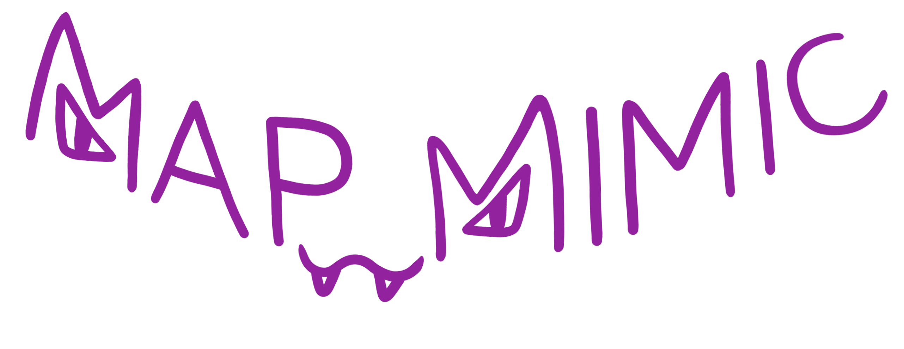

Map Mimic - D&D Combat Map Site
About
Tutorial
Home
This is the about page. Eventually I'll fill this in more (probably).
Map Mimic is open-source. Check out our
Github Repo
, it (probably) doesn't bite!